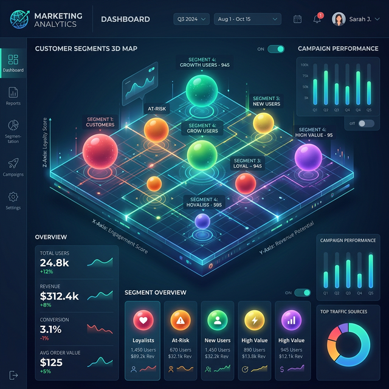

Advanced AI for Executives
Deploy machine learning to unlock Financial ROI while managing Ethical AI biases.
You are the Chief Analytics Officer for a global Fortune 500 company.
The Opportunity: You need to segment thousands of employees into specialized profiles. Treating them identically costs the company millions in turnover and lost productivity.
The Challenge: Real business data isn't 2D—it's highly dimensional. Unsupervised Learning (Clustering) can find hidden "Centers of Gravity" in this 3D data. You will also have to select the exact number of segments using statistical methods, and watch out for hidden AI bias.

Select a Business Target
Choose a real-world enterprise dataset containing 3 distinct dimensions.
Burnout & Compensation
Dimensions: Hours Worked × Satisfaction ×
Salary
Find overworked executives, underpaid
staff, or high flight-risk employees.
Performance & Tenure
Dimensions: Tenure (Yrs) × Performance
(1-5) × Commute
Spot rising stars vs. stagnant
veterans costing the company productivity.
Culture "Moons" (Complex)
Dimensions: Empathy × Ambition × Age
A
mathematically complex dataset that traditional K-Means will
fail to solve.
Step 1: The Raw 3D Data Sphere
Human brains struggle past 2 dimensions. Drag the cube to rotate the 3D space. Each dot is an employee profile.
MBA Tip: AI doesn't see "Burnout" or "High Performers". It only calculates the geometric distance between these dots in a multi-dimensional matrix to find clusters that humans can't see.
Step 2: The "Elbow Method"
We don't guess how many groups exist. The AI ran a simulation from 1 to 10 clusters and mapped the "Inertia" (Cluster error/spread). Look for the "bend in the elbow" to find the optimal number of groups.
Select "K" based on the bend above:
Algorithm Selection
Not all algorithms are equal. K-Means looks for "spheres", while DBSCAN looks for "density".
Executive Report: Financial Impact & AI Ethics
The algorithm has isolated the employee segments. Here are the strategic actions, projected cost savings, and legal/ethical risk checks.
The CEO Takeaway
Machine Learning is not magic—it's advanced geometry. As business leaders, your job is not to code the algorithm, but to:
- Scientifically prove the validity of the data using the Elbow Method.
- Choose the right tool (K-Means vs DBSCAN) for the business problem.
- Audit the output for hidden Bias that could result in PR disasters or lawsuits.
- Measure the ROI of the intervention.